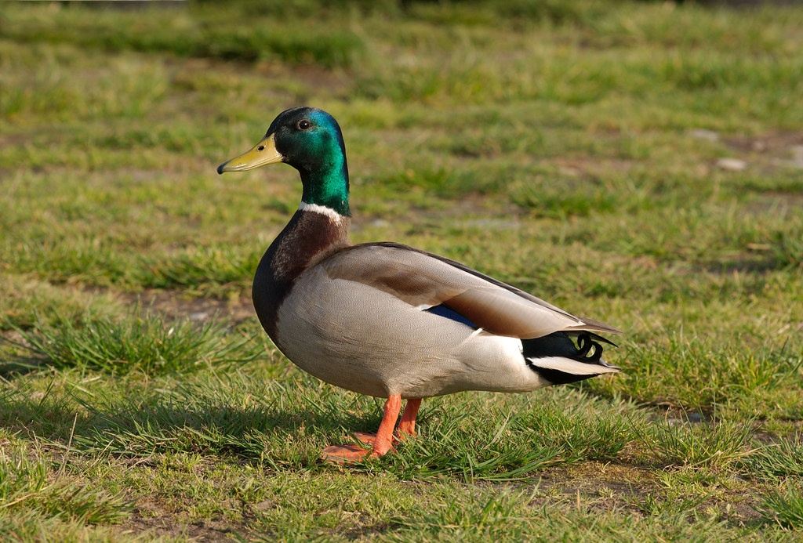

Mallard Duck
Mallards are large ducks with hefty bodies, rounded heads, and wide, flat bills. Like many “dabbling ducks” the body is long and the tail rides high out of the water, giving a blunt shape. In flight their wings are broad and set back toward the rear.
